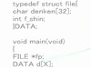
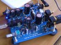
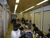

DENKEN
Top
活動内容
部員紹介
LINK
お問い合わせ
DENKEN
-活動内容-
活動内容
基本的には部にあるものを自由に使い、自由に活動する部ですが、PA活動を行う際は全員参加となっています。
また、個人研究の成果を八王子祭・新宿祭にて発表しています。
PA（Public Address）
PA（Public Address）とは、一般に英語で放送設備を意味します。司会者や演説者の声、楽器の音等を多くの人が聞こえるようにするための活動です。 例えば、演奏者や司会者の声をマイクで拾い、アンプを用いて増幅し、増幅させた音はスピーカを用いることで、多く人が聞こえることが出来るようになります。
電子技術研究部では、このPAを行うための演習をしており、ライブ等で使う機材を実際に出して使用する技能を養います。スピーカは部で製作した背丈ほどもある大型スピーカをメインに使用しており，これが電研PAの特徴の1つになります。

PC（Personal Computer）
現在は当ホームページの管理がメインになっています。機材は揃っているので意欲さえあればPCを用いて、C言語プログラミングやPC-UNIX（Linux）によるネットワーク管理、サーバ・クライアントシステムの研究などにも挑戦できます。

電子回路製作
個人の研究として、電子回路製作もよく行われています。PAに関連したアンプやスピーカから、ヘッドフォンアンプやFMラジオなど、各々が作りたいものを作っています。半田ごてやテスターはもちろん、オシロスコープ、エッチング機材等、回路製作に必要な機材は部室に揃っています。部誌にて、その成果を発表しています。

行事
上記活動のほか部員同士の親睦を深め、連帯感を高めることを目的として、新入生歓迎会・支部合宿・夏合宿・忘年会・追い出しコンパ・春合宿などを行っています。 また昨年より月１～２回部会という定例会を行いそれぞれの進捗状況の報告や連絡を行っています。
年間スケジュール
4月：
新入生勧誘、クラブ説明会
5月：
プレ八王子祭、新入生歓迎会
6月：
電気店めぐりの旅
7月：
支部合宿
8月：
夏合宿
9月：
八王子祭リハーサル
10月：
八王子祭
11月：
新宿祭
12月：
忘年会
1月：
2月：
春合宿
3月：
追い出しコンパ